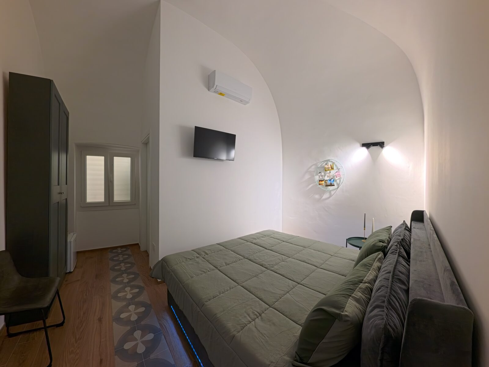
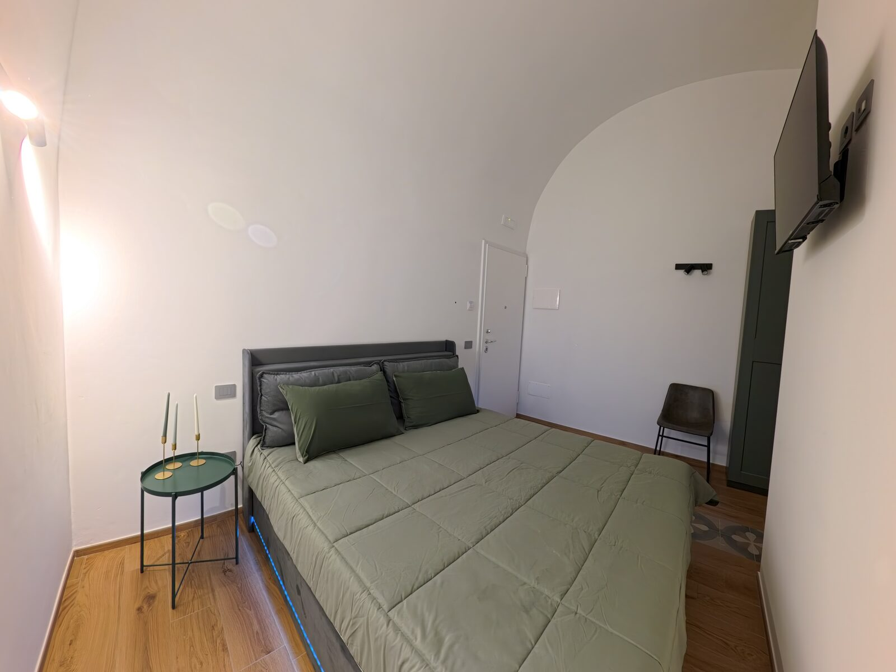
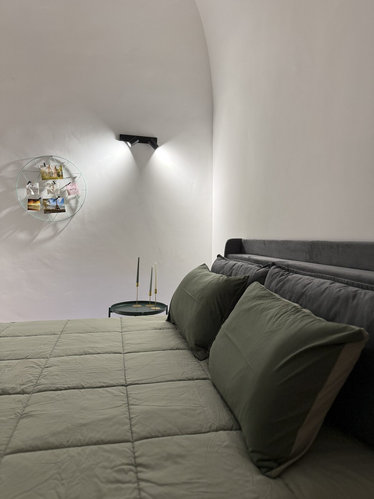
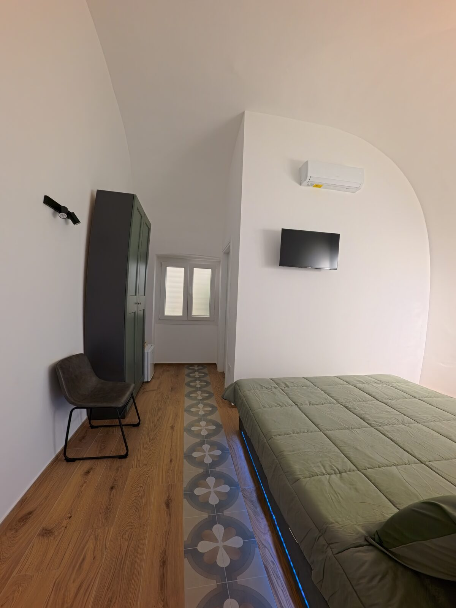
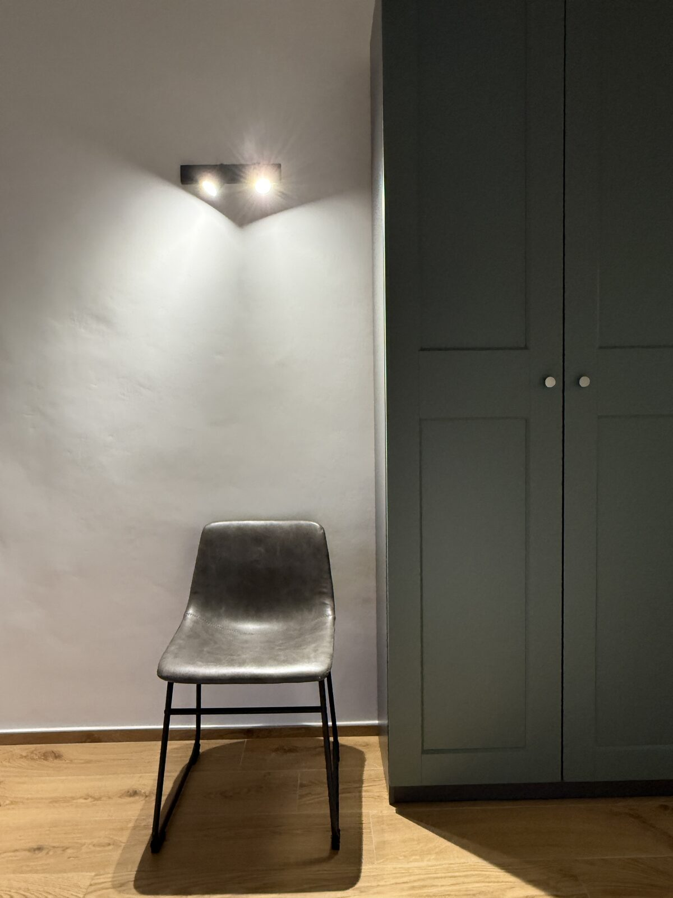
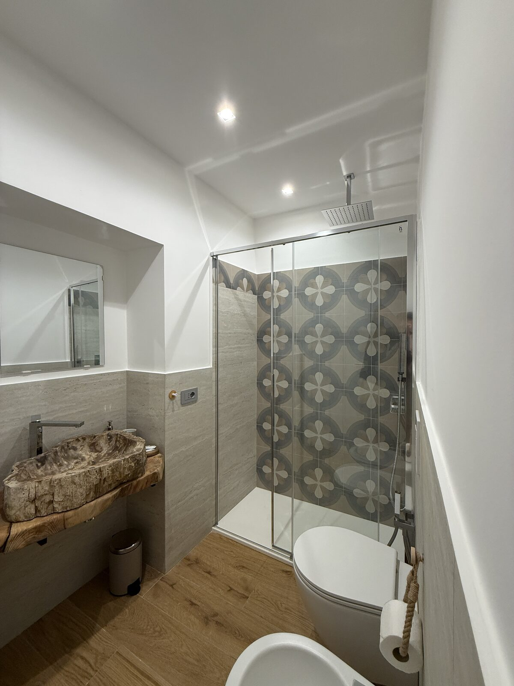
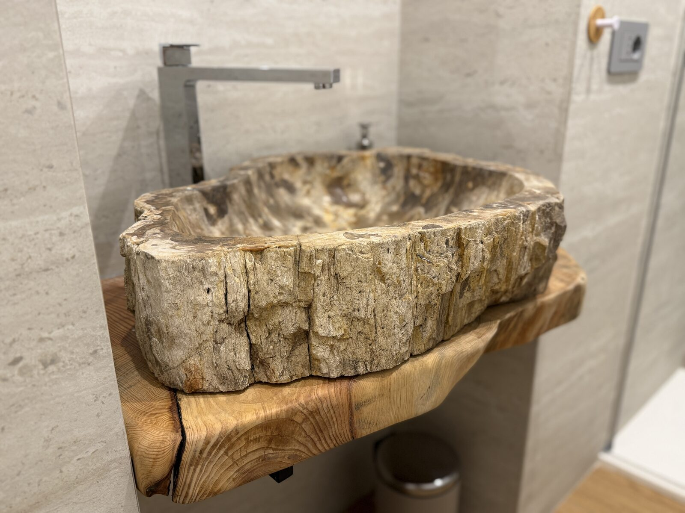
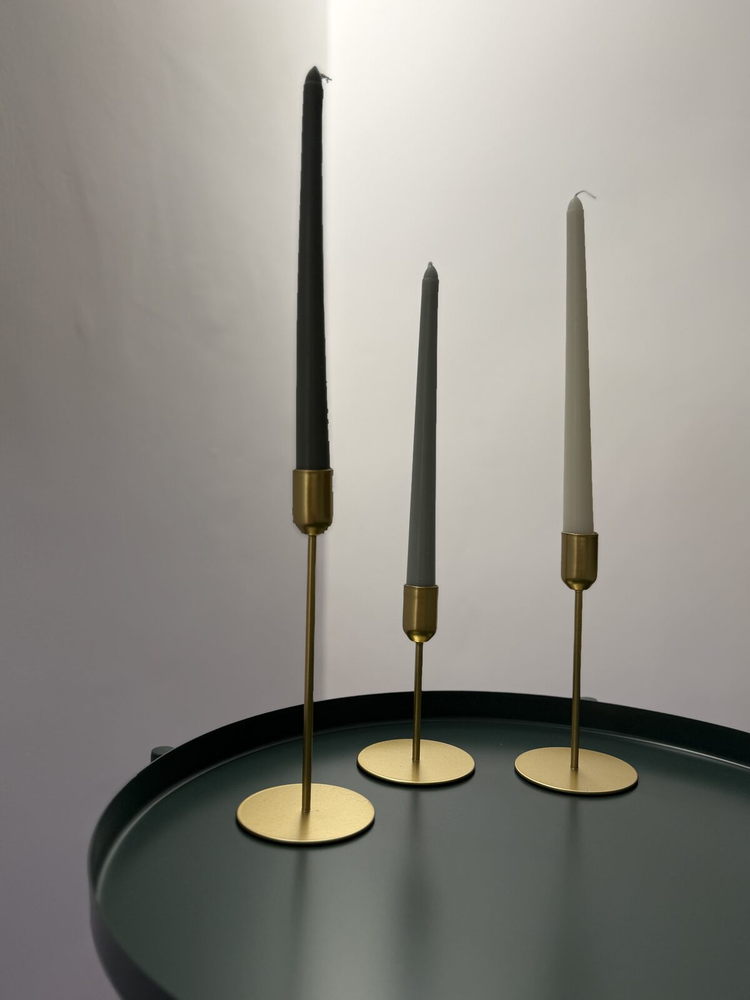

La plus intime








Chambre Nadir
La plus recueillie et la plus intime : voûte en berceau blanchie à la chaux, tête de lit en velours et linge vert sauge. Dans la salle de bain privée, une douche à effet pluie avec un mur de majoliques des Pouilles et un lavabo sculpté dans un seul bloc de bois fossile.